K007 — Lucas Cubic¶
Isotomic pivotal cubic with pole X(2) and pivot X(69) (isotomic conjugate of X(4)): locus of points M whose cevian triangle is orthologic to ABC.

K007 (Lucas Cubic, pK(X2, X69)) on scalene reference triangle \(ABC\) with circumcircle guide and verified Kimberling centers.¶
Catalog Metadata & Concordance¶
Catalog ID |
K007 |
CTC Notation |
pK(X2, X69) |
Conjugacy Class |
isotomic |
Pole / Pivot |
X(2) / X(69) |
Exact SymPy Model |
|
GEOMETOR Concordance |
Homogeneous Barycentric Equation¶
\[\sum_{\text{cyc}} S_A \, x \left(y^2 - z^2\right) = 0\]
Verified Kimberling Center Incidences¶
Center |
Name |
Symbolic Check |
|---|---|---|
X(2) |
Centroid |
Verified (exact 0) |
X(4) |
Orthocenter |
Verified (exact 0) |
X(7) |
Gergonne Point |
Verified (exact 0) |
X(8) |
Nagel Point |
Verified (exact 0) |
X(20) |
de Longchamps Point |
Verified (exact 0) |
X(69) |
Symmedian Point of Anticomplementary Triangle |
Verified (exact 0) |